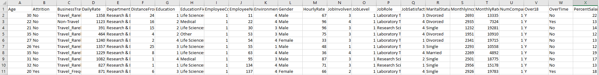
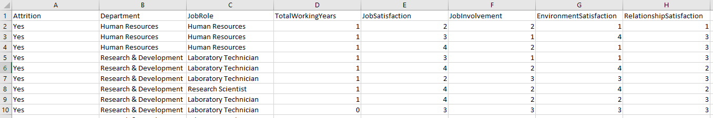
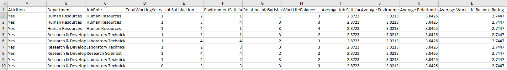
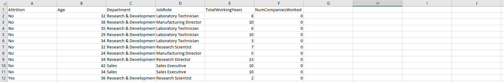

SQL & Power BI Project
Tabular Reporting on H.R Employee Attribiton.
Dataset obtained from Kaggle.
SQL Summary:
Given a comphrehensive but singular dataset, we wrote SQL queries to generate tabular reports on specific subsets of this data.
Namely, reports involving the new hires who quit within 1 year.
These queries were written with the following agenda in mind:
1. Generate a table illustrating the employee information for those who quit within 1 year
2. Show the workplace survey results of the "New Hires" who quit
3. Compare the above results to the company average results to the same questions
4. Generate table(s) to examine the relationship between employment history and attrition rate
1. SELECT DISTINCT * FROM hr.table WHERE TotalWorkingYears <= 1;

2. SELECT Attrition, Department, JobRole, TotalWorkingYears,

JobSatisfaction, JobInvolvement, EnvironmentSatisfaction,
RelationshipSatisfaction
FROM hr.table WHERE TotalWorkingYears <= 1 AND Attrition = "Yes" ORDER BY Department;
3. SELECT Attrition, Department, JobRole, TotalWorkingYears,

JobSatisfaction, JobInvolvement, EnvironmentSatisfaction,
RelationshipSatisfaction,
(SELECT AVG(JobSatisfaction) FROM hr.table) AS "Avg Job JobSatisfaction",
(SELECT AVG(JobInvolvement) FROM hr.table) AS "Avg Job Involvement",
(SELECT AVG(EnvironmentSatisfaction) FROM hr.table) AS "Avg Environment Satisfaction"
FROM hr.table WHERE TotalWorkingYears <= 1 AND Attrition = "Yes" ORDER BY Department;
4 a.
SELECT Attrition, Age, Department, JobRole, TotalWorkingYears, NumCompaniesWorked
FROM hr.table ORDER BY NumCompaniesWorked LIMIT 2000;
We noticed that the returned result table matched MySQL's pre-determined row limit of 1000 rows, hence we include the LIMIT
clause to avoid any loss in data.
